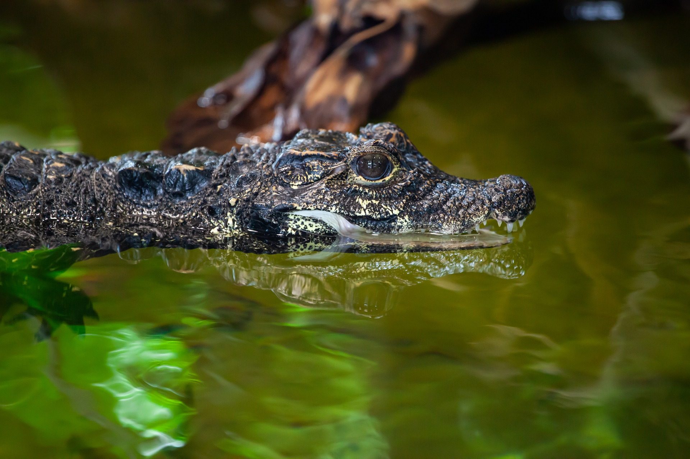

(백엔드 애들이 받아올 사용자 아이디)님 로그아웃

· 이름 : 난쟁이 악어(Dwarf crocodile)
· 수명 : 40년에서 75년
· 크기 : 1.5m에서 2m
· 먹이 : 거대한 무척추동물(가재 등의 갑각류)과 물고기
· 서식지 : 아프리카 사하라 사막 이남 지역 서쪽
· 부연 설명 : 악엇과에 속하는 종들 중에서 가장 작은 종이다. IUCN에서 취약종(Vulnerable)으로
분류되어 있다. 작은 크기 때문에 포식자들에게 손쉬운 먹잇감이 된다. 그래서 목과 등이 단단하게
무장되어 있으며 목의 밑부분과 배에도 Osteoderm(뼈판 혹은 뼈비늘, 비늘을 이루는 부품 중 하나)
이라 불리는 보호 장비가 갖추어져 있다. 사회성은 거의 없으며 여러 개체가 어울릴 때는 짝짓기철 뿐이다.
· 수명 : 40년에서 75년
· 크기 : 1.5m에서 2m
· 먹이 : 거대한 무척추동물(가재 등의 갑각류)과 물고기
· 서식지 : 아프리카 사하라 사막 이남 지역 서쪽
· 부연 설명 : 악엇과에 속하는 종들 중에서 가장 작은 종이다. IUCN에서 취약종(Vulnerable)으로
분류되어 있다. 작은 크기 때문에 포식자들에게 손쉬운 먹잇감이 된다. 그래서 목과 등이 단단하게
무장되어 있으며 목의 밑부분과 배에도 Osteoderm(뼈판 혹은 뼈비늘, 비늘을 이루는 부품 중 하나)
이라 불리는 보호 장비가 갖추어져 있다. 사회성은 거의 없으며 여러 개체가 어울릴 때는 짝짓기철 뿐이다.